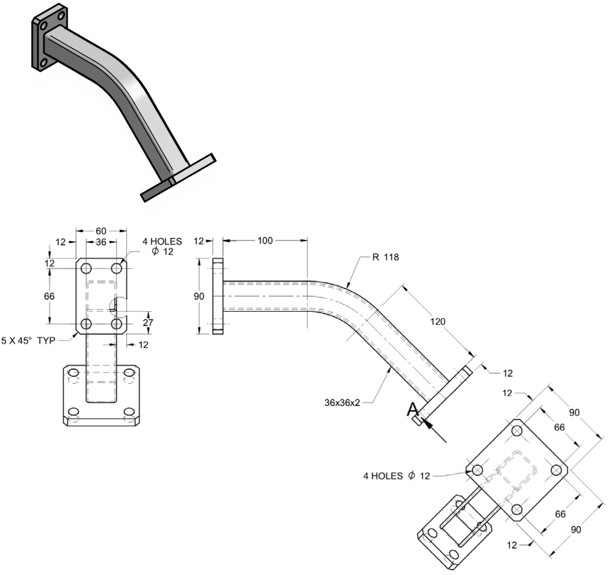

1.5 Advance 3D drawing
如果你打開Fusion360上方的工具列，你會發現有很多各式各樣的工具，這些工具在繪圖時會非常有幫忙，本章會介紹幾個常用的工具。
1.5 Advance 3D drawing1. Plane & axis練習題1練習題22. Mirror & Pattern練習題13. Shell練習題14. Loft練習題1練習題25. Revolve練習題1練習題26. Sweep練習題1練習題27. 混合練習練習題1
1. Plane & axis
輔助平工具是常用的工具之一，其中幾個常用的包括:

- Offset Plane: 指定一個平行於點選面的偏移平面
- Midplane: 指定兩個平面的中間面，對於用mirror feature十分有用
- Plane through Two Edges/ Plane through Three Points: 常用於指定一個平面，將立體切開
其他功能用到的時候再講解。
練習題1

- 首先在正視圖建立底座

- 對稱擠出65mm

- 用
Plane at angle建立一個30度的面

- 在這個面建立sketch, 繪畫後就可以用extrude擠出


練習題2
每個格的尺寸為10x10mm

- 首先在正面建立方形和指定斜面的尺寸

- 整個方形連同斜面擠出40

- 在側面建立sketch, 指定另外斜面的尺寸

- 將兩個sketch都顯示出來(如果它自動隱藏了的話), 用
plane thought 3 points

- 用
split body指令將方形切開, 之後就可以將平面和不要的角隱藏

2. Mirror & Pattern
對於重覆性高，但完全相同的動作, 可以用mirror和pattern來快速完成。
練習題1

- 在xy平面建立一個
new sketch, 用center rectangle劃一個130x80mm的方形, 之後用extrude擠出50mm高


- 在方形的頂部建立一個
new sketch, 用hotkeyR劃一個30x25mm方形, 之後用extrude減去30mm深


- 之後可以用
mirror指令, 選擇type為feature,objects為剛剛的減去feature,mirror plane則選擇yz平面(如果因物件擋住了yz平面的話, 可以zoom遠一點或旋轉一下) - 重覆
mirror指今, 今次點選的objects為減去feature和剛剛的mirror指令,mirror plane則為xz平面


- 用
hole指令(hotkeyH)開啟鑽孔工具, 點選右下角, 由於沒有事先開sketch來定點, 可以用reference來指定距離邊緣多少, 看看圖則, 分別為15mm和12mm, - hole的深度(
Extents)選All,Hole Type選擇中間的平底孔Counterbore,Hole Tap Type即孔是否要攻螺絲牙, 今次不用, 所以選第一個Simple, Drill Point就是鑽孔的尾端是平還是尖, 今次選哪一個都可以, 因為孔是完全穿的 - 看圖則, 孔的要求是
4 HOLES Ø8 THRU ALL ⌴Ø18 ↧3,Ø8 THRU ALL即直徑8, 完全鑽穿,⌴Ø18 ↧3即平底孔直徑18mm, 深度3mm


- 4個孔可以跟上面一樣mirror兩次來完成, 或用另一個指令
rectangular pattern, 方形矩陣功能可以一次過複製多個功能, 而且用矩陣呈現 type選feature,objects選擇剛剛的hole feature,Directions可以選初始向哪一邊, 我是選x軸,Distance type選Spacing, 兩個距離分別是100和56mm


中間的圓孔可以用new sketch劃兩個半圓用擠出減去, 或簡單地用hole指令完成

最後兩個螺絲孔, 都是用
holes指令, 距離邊緣15mm, 在中線上, 即距離邊緣40mm,hole type選第一個simple,hole tap type選第三個tapped, 即個孔都是攻牙, 所以Thread Offset選第一個,Drill Point選尖尾的, 圖則上是M12x1.5即M12螺絲, 絲距為1.5mm, 最後選Modeled就可以見到模型有螺絲紋

- 接著緣著yz平面, mirror這個螺絲孔,
Compute Option要用Optimized才會將螺絲孔一次過mirror

在前面建立
new sketch, 用extrude減去

最後選取需要做fillet的邊, 修圓角2mm


3. Shell
Shell為十分好用的薄殼功能，點選作為開口的面，指定厚度，就能做到一個碗一樣的容器，省卻offset再將立體相減的步驟。

試試完成下面的題目:
練習題1

Hints:


4. Loft
Loft 是其中一個常用的成型工具。對於常見的喉管連接工件，因喉管有不同尺寸，有圓有方，如果製作一個連接器，就需要劃一個上下圓上方的立體，如果用一般手則去劃會非常麻煩，但常見的CAD圖軟件都有一個叫loft的功能，將不同造型的面連接。
如下圖例子，loft可以直接將兩個面相接，也可以指定一條需要穿過的中心線。

試試下面這兩題:
練習題1


- 在xy平面建立一個半徑
170mm的圓, 擠出40mm


- 用
offset plane, 點選剛剛的圓形頂部, offset315mm - 在剛剛的offset plane建立
new sketch, 劃一個直徑170mm的圓, 並距離原點225mm


- 用
loft功能, 點選剛劃的圓和圓柱的頂部,guide type選擇不需要Rails

- 將170mm直徑的圓擠出40mm, 之後就可以用
mirror功能, 選擇剛剛的兩個features做鏡像


最後用
shell功能造成簿殼, 要穿孔的面分別為頂的兩個圓和底部的圓, 選擇inside2mm


練習題2

5. Revolve
旋轉成型工具就有點似現實世界中的車床般，透過緣著一個軸旋轉一個profile成型。

試試以下這兩題:
練習題1
3D 打印軸承。
軸承為眾多機械零件中十分重要的一環, 但由於軸承的尺寸是固定的, 在設計製作時必須首先考量軸承的尺寸才能決定創作物的尺寸, 而且軸承尺寸越大, 價錢就會幾何級數上升。對於一些精度和轉速都不高的應用場合, 可考慮使用現成的Ø4.5 的不繡鋼珠自製3D 打印軸承。

- 首先在正面(我的是xz平面)建立一個
new sketch, 跟據圖則建立一個6x6 center rectangle, 邊緣距離原點20mm(因軸承內徑為40mm, 半徑則為20mm), 一個Ø4.8 cirlce, 之後就可以補上中心線, 建立兩條對稱線留空0.5mm空隙 - 用
revolve指令緣z軸轉360度建立實體(如果見到一個藍色和一個橙色的revolve指令, 選擇藍色的, 藍色才是實體, 橙色的revolve只會建立一個曲面)


- 在xy平面建立
new sketch, 用hotkeyp投影兩條邊變成兩個點, 之後補一條中線, 就可以劃一個Ø4.8的圓 - 用擠出工具減去上面的孔


- 用
chamfer工具, 選擇圓的4邊修倒角0.5mm


- 用
sphere指令, 在原點建立一個Ø4.5的球體 - 用
move指令, 將球體向x軸移動23mm


- 最後就可以利用
circular pattern工具, 將球體旋轉複製30份

練習題2
第二題則為常見於3d打印機的8mm直線軸承, 請自行完成。


6. Sweep
掃掠成型(Sweep)工具是指將一個profile緣著一條軌跡掃掠。

練習題1

- 首先在正面(xz平面)建立一個
new sketch, 跟據圖則先劃管的中心線

- 在yz平面上建立
new sketch, 跟據圖則, 劃管的外直徑, 即Ø25的圓


- 用
sweep指令, 用圓形作為Profile, 用管的中心線為Path, 建立管的實體

- 用
shell指令, 點選管的兩頭, 建立2.5mm厚度的管殼

- 在管的末端, 建立new sketch, 跟據圖則所示劃出接法蘭的尺寸Ø45的圓, 用hotkey
E擠出7.5mm


- 接著, 在法蘭的表面開一個
new sketch, 跟據圖則劃出六個接口的螺絲孔 - 用hotkey
E減去,Extrude type選用to object, 點選法蘭後面的面


- 最後, 重覆剛才的步驟, 在管的另一面建立相同的法蘭即可

練習題2
這題你需要用到plane along path


7. 混合練習
以下題混合幾個常用的造型工具。
練習題1